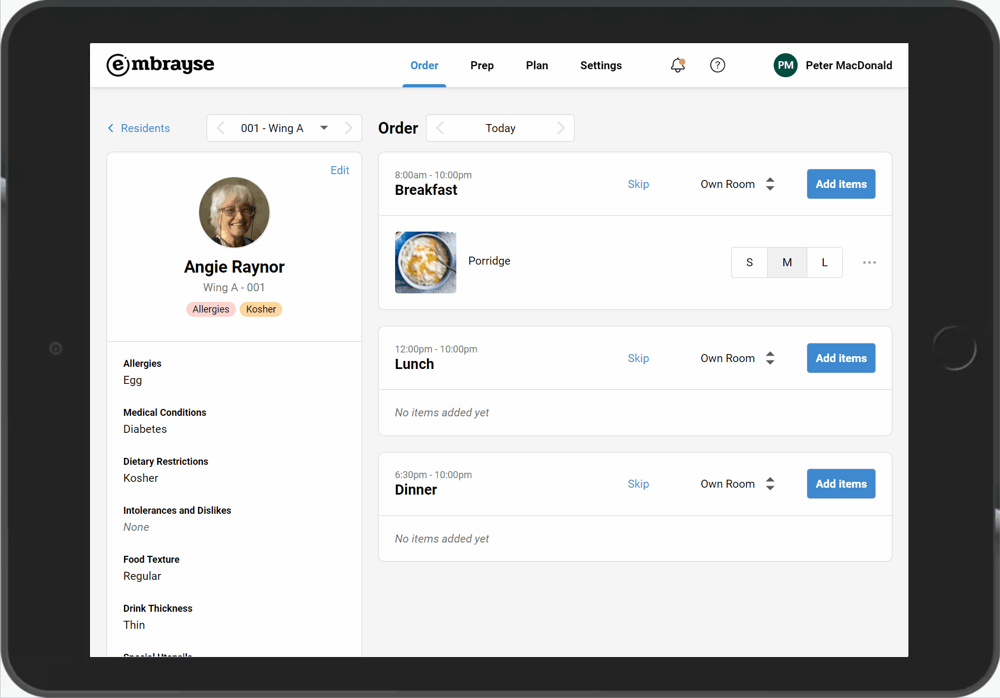
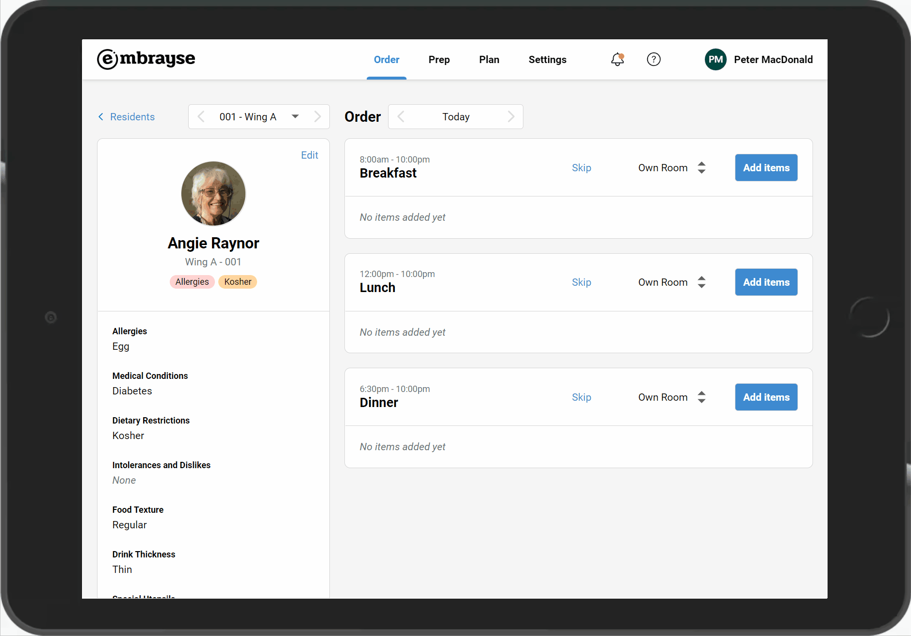
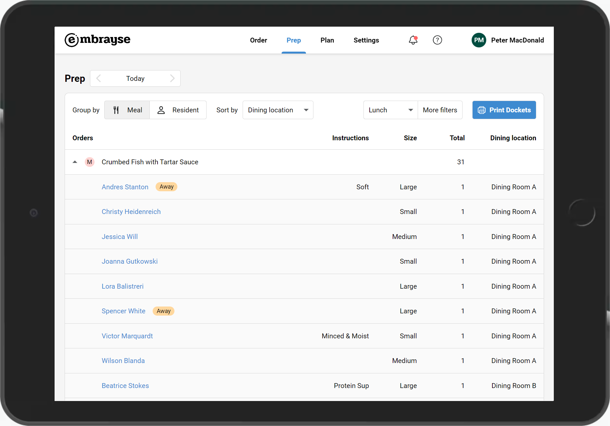

Release 2022.2 – IDDSI texture overrides, quick resident picker, and PCS integration improvements
This release focuses on three main improvements to meal ordering and dietary management: per-order texture overrides, faster resident navigation, and enhancements to the PCS integration.
Food and drink texture overrides
Staff can now apply texture modifications per meal order, with automatic preference saving. Safety confirmations appear when an override is less restrictive than a resident's default texture.

Quick resident picker
Order collection is faster with navigation arrows that skip unoccupied rooms, so staff can move through a wing without stopping on empty rooms.

PCS integration enhancements
Automatic synchronisation now includes food textures, drink thickness, allergies, and medical conditions from PCS, on a best-effort basis.
Away status changes
Orders from away residents now appear on reports with clear status indicators, so kitchen and service staff know at a glance.

Other Improvements and Bug Fixes
- Fixed: Sometimes when a resident has open orders, their room can't be changed.
Want to see Embrayse in action?